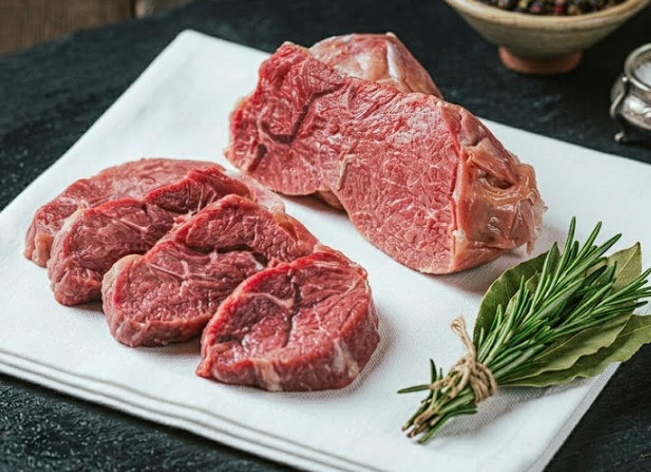

Пищевое производство
Испытание пищевого триполифосфата натрия в мясопереработке
Сравните триполифосфат натрия пищевого качества с действующей рецептурой по выходу, потерям влаги и текстуре.

Критерии испытания
До испытания согласуйте контрольный вариант, условия измерений и критерии приёмки.
Исходные данные
Опишите отруб или сырьевую смесь, исходный pH, содержание соли, поглощение рассола, механическую и тепловую обработку.
Сырьё и марки для оценки
Сверьте идентификацию триполифосфата натрия (INS 451(i), CAS 7758-29-4) и пищевую спецификацию.
Порядок испытания и оценка результата
Проверьте контрольную и опытную партии на одной линии. Взвешивайте сырьё перед обработкой, после обработки рассолом, после выдержки и после приготовления.
Отдельно зафиксируйте поглощение рассола, выделившуюся влагу и потери при нагреве. Сравните итоговый выход, внешний вид, текстуру и разброс между партиями.
Условия применения и требования
Сверьте идентификацию, пищевую спецификацию и условия применения для конкретного вида мясной продукции. Проверьте требования к маркировке на рынке сбыта.
Для рынка ЕАЭС проверьте актуальные редакции регламентов и применимые изменения. Для других рынков ориентируйтесь на правила страны сбыта.
Спецификация и документы
Запросите пищевую спецификацию и сертификат анализа (CoA) партии, которую будете оценивать. Сверьте наименование вещества, методы испытаний и согласованные пределы.
Запрос для испытания
Опишите применение и требуемую марку. Укажите ожидаемый объём закупки, перечень документов и место поставки.